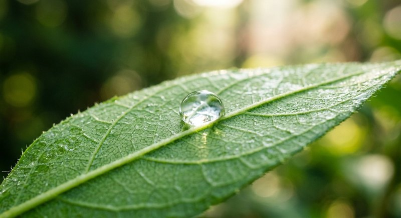

Состав и дозировка · 2 мин чтения
Аминокислоты и витамины в удобрении: зачем они растениям
Аминокислоты и витамины могут входить в состав комплексных подкормок. Читайте их как часть общей формулы, а не как обещание мгновенного роста или замену основным питательным веществам.
Материал обновлён 24.10.2026 · Справочная информация, не заменяет инструкцию на упаковке.

Как понимать состав комплексного средства
На упаковках жидких удобрений могут перечисляться NPK, органические компоненты, аминокислоты и витамины. Каждый пункт описывает часть состава, но эффективность применения зависит от концентрации, доступности компонентов и дозировки рабочего раствора.
Один ингредиент не позволяет предсказать результат на любом растении. Растение может не расти из-за света, температуры или повреждения корней, даже если в удобрении есть много дополнительных компонентов.
Что указано в составе Семяздрава
В предоставленных характеристиках Семяздрава перечислены аминокислоты и витамины A, E, PP, B1 и B2 наряду с NPK, гуминовыми и фульвовыми кислотами и янтарной кислотой. Это описание состава, а не обещание конкретного эффекта для каждой культуры.
Используйте комплекс по инструкции. Не добавляйте витамины из аптечных препаратов и не смешивайте удобрения без рекомендации производителя: это изменит концентрацию раствора и усложнит оценку реакции.
Что важнее рекламных обещаний
Перед покупкой проверьте перечень растений, способы внесения, срок годности и норму расхода. После применения наблюдайте за новым ростом, но не ждите мгновенного результата на следующий день.
Если растение выглядит больным, сначала исключите вредителей и проблемы ухода. Комплексное удобрение — элемент регулярного питания, а не лекарство от любого недомогания.
Частые вопросы
Витамины в составе гарантируют пышное цветение?
Нет. Цветение зависит от вида растения, света, температуры и многих других факторов.
Можно ли добавить витамины отдельно в раствор?
Не смешивайте дополнительные компоненты с удобрением без указаний производителя.